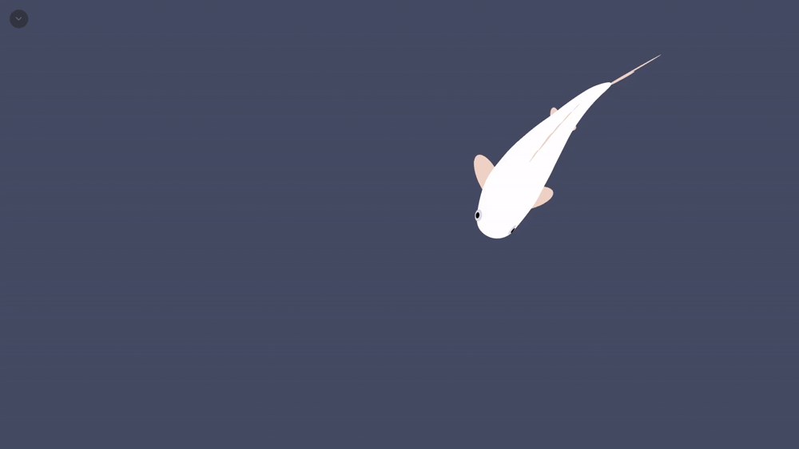
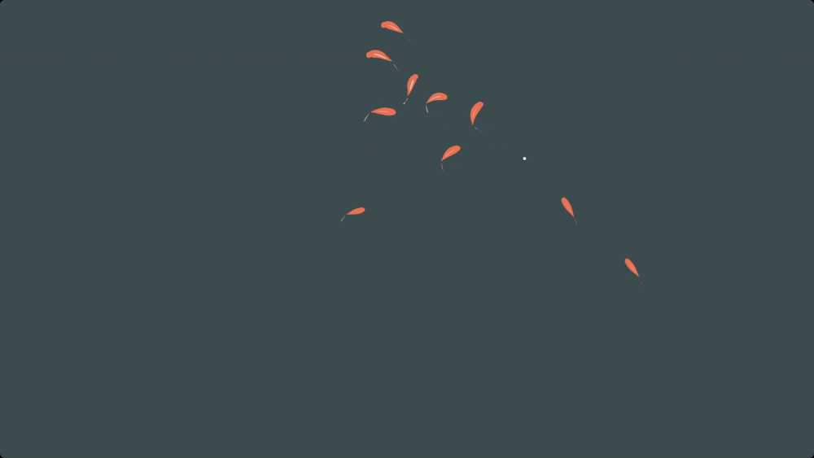
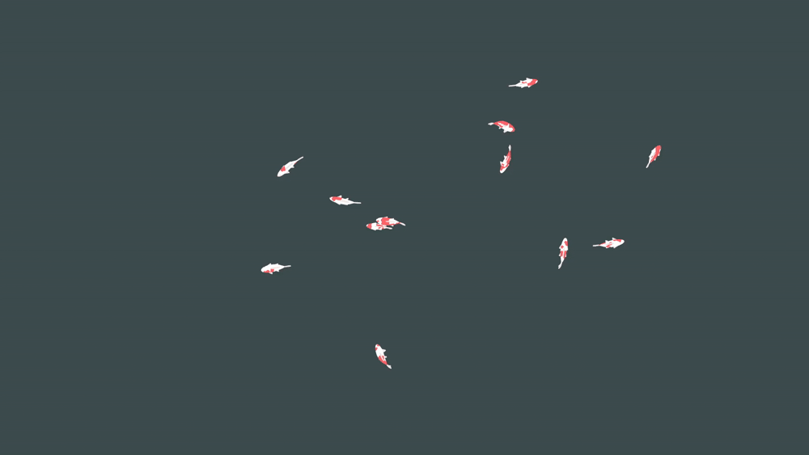
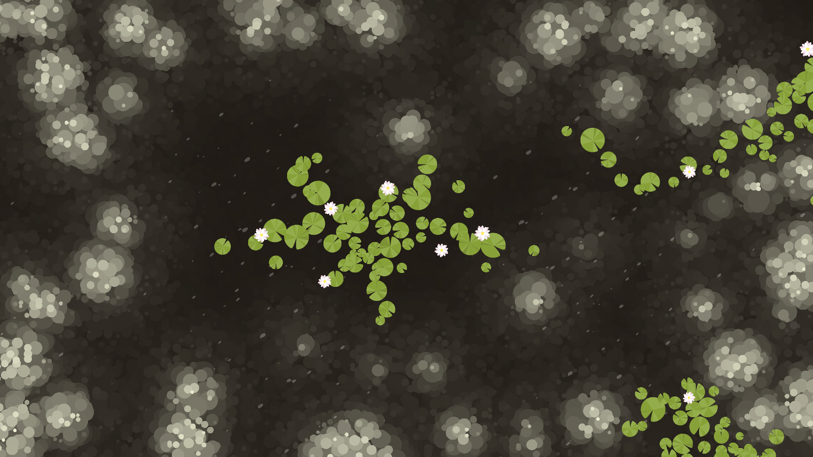
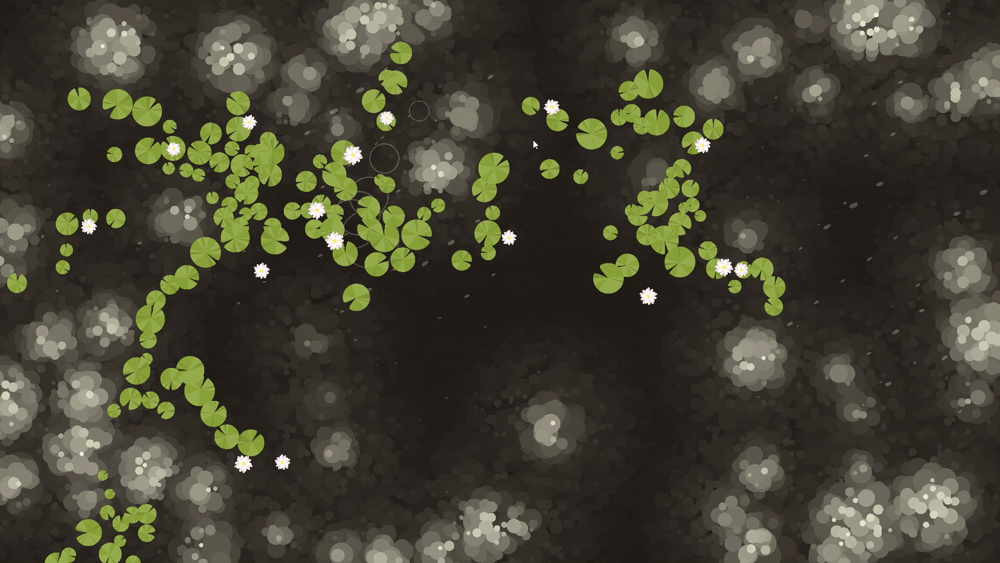
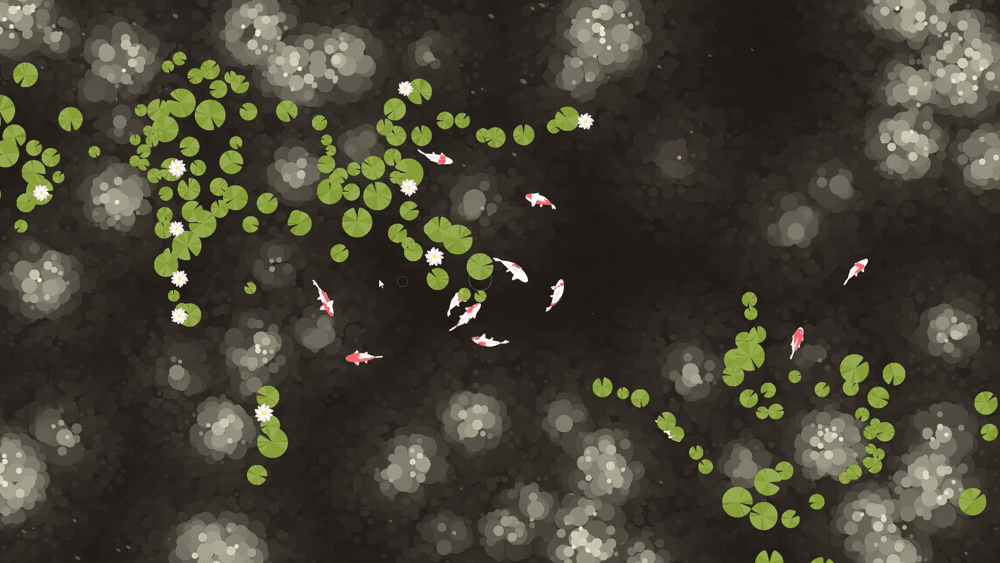

Génération procédurale de poissons koi

Inspiré d'une vidéo par argonaut, j'ai désiré en faire ma propre version et de pousser le projet plus loin.
Informations
Crédits
Inspiré d'une vidéo par argonaut
Contexte
Utilisation de l'IA générative?
Utilisation de ChatGPT et Claude pour explorer, générer, corriger, compléter, itérer et améliorer une partie du code.
Processus 1/5
V1

Dans cette version, j'ai reproduit le projet dans un logiciel nommé cables.gl. Celui-ci est un logiciel de programmation nodale qui à simplifié certaines étapes, mais qui à amené certaines limitations.
Processus 2/5
V2

Ici, j'ai commencé à utiliser p5.js. Je suis aussi passé à plusieurs poissons dans l'espoir de m'approcher d'un étang virtuel.
Processus 3/5
V3

Modification de l'algorithme des poissons, ajout de textures, de nageoires et de collisions.
Processus 4/5
L'environnement

Ce dernier est entièrement procédural et formé de shaders. Pour la performance, je sauvegarde les résultats sous forme de textures et c'est ceeux-ci qui sont dessinées.
Processus 5/5
L'interactivité

J'ai ajouté de l'interactivité pour offrir à l'utilisateur, je l'espère, une petite mais agréable surprise.
Résultat

En conclusion
Ce projet m'a demandé beaucoup de temps et d'itérations. J'ai recommencé à plusieurs reprises alors que mes habiletés en programmation s'amélioraient. Ainsi, j'ai beaucoup appris au niveau du code.